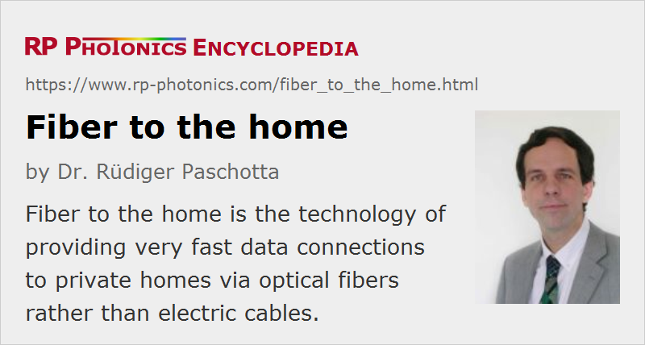

Fiber to the Home
Acronym: FTTH
Definition: the technology of providing data connections to private homes via optical fibers rather than electric cables
Categories: fiber optics and waveguides, lightwave communications
How to cite the article; suggest additional literature
Author: Dr. Rüdiger Paschotta
Fiber to the home (FTTH) (or FTTP = fiber to the premises) means providing broadband data connections (e.g. for Internet access, telephony, and video on demand, sometimes combined to triple-play services) to private households and small offices directly with optical fibers. This is a technical alternative to the currently dominant model of “fiber to the node” (FTTN), where a fiber transports data only to some node, located in a central office or in a roadside cabinet, from where the fine distribution to different buildings is done with copper cables.
FTTH comes in different technical forms, being based either on active or passive optical networks. Active networks contain powered optoelectronic components such as photonic integrated circuits e.g. for switching and rooting, and are capable of providing very fast full-duplex connections. They can be used for realizing Point-to-Point (PtP) Ethernet, as is most often used in Europe. On the other hand, passive optical networks (PONs) are based on passive splitters (arranged behind fiber power amplifiers) which distribute signals to the subscribers; the signals for different users may be multiplexed, e.g., with time division multiplexing. Switching and rooting are then performed in a central office, and the uplink data rate is often much smaller than that for downloads. Which approach is more appropriate depends very much on the usage requirements, e.g. concerning download and upload bandwidth, and on the typical proximity of users.
The use of fibers for the “last mile” offers enormous transmission capacities, easily allowing for Internet connections with 100 Mbit/s and more. Currently used standards use 1 Gbit/s (EPON) or 2.5 Gbit/s (GPON) downstream data rates, to be shared by some dozens of users. A new standard for 10 Gbit/s is under development. Such capacities are actually far above the current needs of usual customers, so that it has been questioned whether the use of fibers is economical in this area, given that the required optoelectronic components are more expensive and more delicate to handle, compared with the usual electrical installations. The proponents of FTTH, however, point out that historically the demand for such commodities has regularly exceeded all expectations once such a service was available and customers found methods to utilize them. It is already expected, for example, that FTTH could be the basis for video on demand, where large amounts of video data can be downloaded from central servers. From such a viewpoint, the current discussion may appear like the question of whether gigabyte harddisks and multi-megabyte main memory for word-processing PCs are really needed – a question which was posed in the early 1990s.
For the providers, at least the question remains when to switch to FTTH, and where to begin: everywhere at the same time, or at the beginning only in regions where it appears to be economically most sensible. Obviously, such decisions depend not only on the already existing infrastructure, but also on many questions which are difficult to answer, concerning e.g. the future development of the use of broadband services (perhaps in some designated target market), public regulations, component prices, various issues on the system level, and of course what the local competitors do.
Particularly in Japan, massive investments are currently being undertaken to push the technology of FTTH. Providers try to tackle the economical challenge with a combination of volume gains and technical improvements, such as bend-insensitive photonic crystal fibers and improved fiber connectors, which make it simpler to install such systems, eventually even in a do-it-yourself manner. Factors which greatly support FTTH in Japan are the high population density, which makes it possible to connect many users in a small region, and the widespread fascination for high technology.
A consequence of the increasing use of FTTH will be that the data volumes transferred for services like video on demand will strongly increase, and the capacity of the Internet backbone will have to be expanded accordingly.
There is also the acronym FTTX, where “X” is a placeholder, e.g. for H = home, N = node, B = business, C = curb, or P = premises.
Suppliers
The RP Photonics Buyer's Guide contains 25 suppliers for fiber to the home equipment.
Questions and Comments from Users
Here you can submit questions and comments. As far as they get accepted by the author, they will appear above this paragraph together with the author’s answer. The author will decide on acceptance based on certain criteria. Essentially, the issue must be of sufficiently broad interest.
Please do not enter personal data here; we would otherwise delete it soon. (See also our privacy declaration.) If you wish to receive personal feedback or consultancy from the author, please contact him e.g. via e-mail.
By submitting the information, you give your consent to the potential publication of your inputs on our website according to our rules. (If you later retract your consent, we will delete those inputs.) As your inputs are first reviewed by the author, they may be published with some delay.
See also: optical fiber communications
and other articles in the categories fiber optics and waveguides, lightwave communications
|  |
If you like this page, please share the link with your friends and colleagues, e.g. via social media:
These sharing buttons are implemented in a privacy-friendly way!